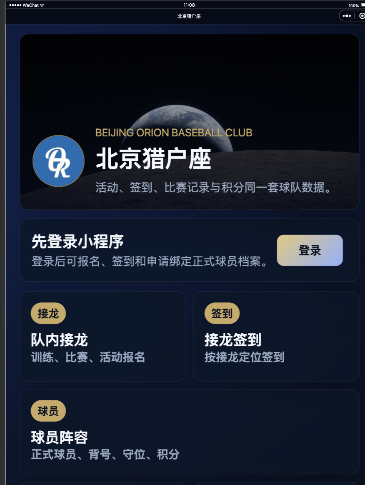
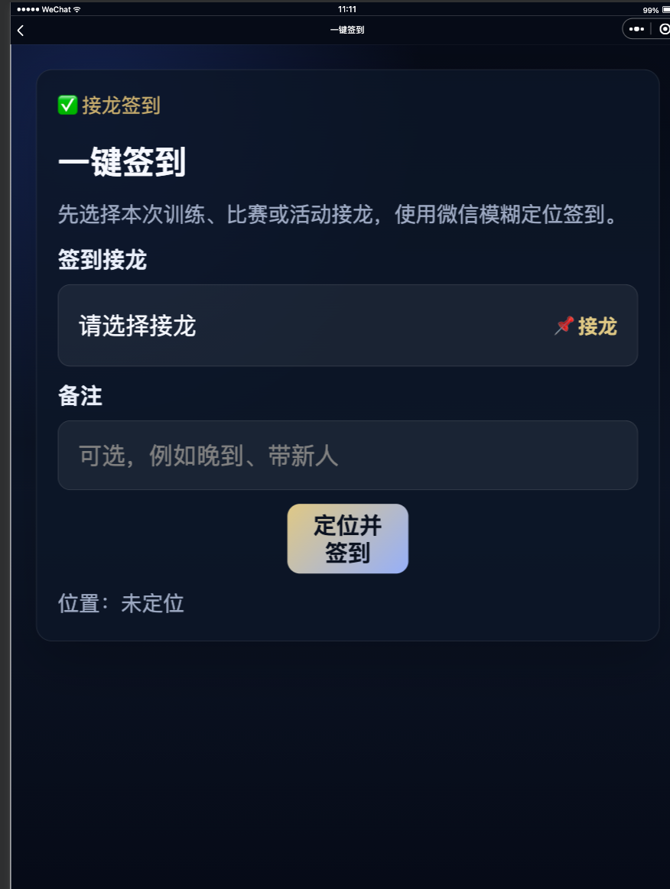
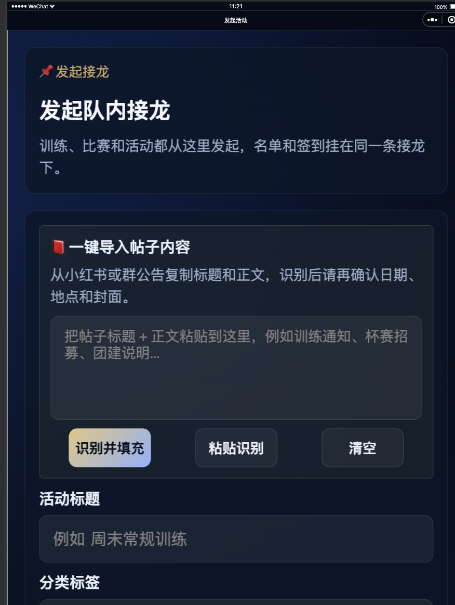
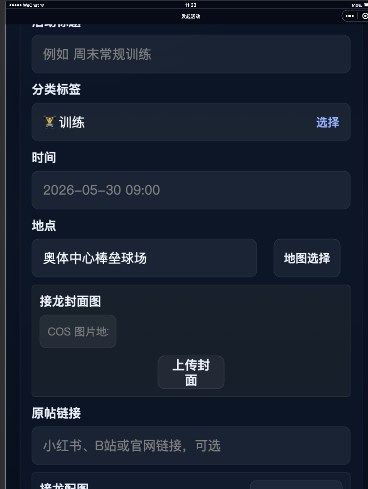

申请顺序
按这个顺序操作，避免在后台来回找材料。
1. 申请 wx.getLocation
队员主动点击“定位并签到”时使用，上传前两张截图。
2. 申请 wx.chooseLocation
管理员发起接龙选择打卡点时使用，上传后两张截图。
3. 申请通过后再改代码
通过后再切换 `requiredPrivateInfos` 和签到定位接口。
wx.getLocation
用于队员到场签到定位校验。
接口名称
使用场景
申请原因
页面路径
用户触发方式
是否后台持续定位
上传辅助图片
接口名称：wx.getLocation
使用场景：队员在训练、比赛或活动接龙中进行到场签到。
申请原因：因当前业务涉及球队训练、比赛和活动接龙签到，队员到达接龙指定场地后，需要获取用户当前地理位置，与管理员预先设置的打卡点进行距离校验，用于确认队员实际到场、避免异地代签到或误签到，并据此生成出勤记录和积分流水，完成“接龙报名 - 到场签到 - 积分统计”的业务闭环。故申请 wx.getLocation 接口，用于队员主动点击“定位并签到”时获取当前位置并完成到场签到校验。
页面路径：pages/checkin/checkin
用户触发方式：用户主动点击“定位并签到”按钮后触发。
是否后台持续定位：否。仅在用户主动点击签到按钮时获取一次当前位置，不后台持续定位，不记录运动轨迹。
辅助图片：
辅助图片/01_首页签到入口.png
辅助图片/02_签到页定位按钮.png
wx.chooseLocation
用于管理员发起或编辑接龙时选择打卡点。
接口名称
使用场景
申请原因
页面路径
用户触发方式
是否获取普通用户当前位置
上传辅助图片
接口名称：wx.chooseLocation
使用场景：管理员发起或编辑训练、比赛、活动接龙时，在地图中选择本次接龙的打卡点。
申请原因：因当前业务涉及球队训练、比赛和活动接龙管理，管理员发起或编辑接龙时，需要在地图中选择本次活动的打卡点，并保存地点名称、地址和经纬度，作为队员后续签到时的目标位置。该地点用于完成“管理员设置打卡点 - 队员到场签到 - 出勤和积分统计”的业务闭环。故申请 wx.chooseLocation 接口，用于管理员发起或编辑活动接龙时选择打卡点。
页面路径：pages/events/event-create/event-create
用户触发方式：管理员主动点击“地图选择”按钮后触发。
是否获取普通用户当前位置：否。该接口用于管理员选择活动打卡点，不用于获取普通用户当前位置。
辅助图片：
辅助图片/03_发起接龙页面.png
辅助图片/04_地图选择按钮.png
隐私授权说明
如果后台或隐私协议要求补充用途说明，可直接复制。
wx.getLocation
wx.chooseLocation
辅助图片
微信后台上传时按接口选择对应两张图。图片都在本 HTML 同级目录的 `辅助图片/` 文件夹内。

wx.getLocation 第 1 张

wx.getLocation 第 2 张

wx.chooseLocation 第 1 张

wx.chooseLocation 第 2 张
注意事项
申请时容易踩的点。
- 不要上传开发者工具全窗口原图 `_window_*.png`，本申请文件夹没有放这些原图。
- `wx.getLocation` 的申请理由要强调“用户主动点击签到按钮后获取一次当前位置”，不要写后台持续定位。
- `wx.chooseLocation` 的申请理由要强调“管理员主动点击地图选择按钮设置打卡点”，不要写普通用户被动定位。
- 如果后台要求补充更完整链路，再补截原生地图选择页、选点回填页或签到成功页。
申请通过前不要直接把小程序代码切到 `wx.getLocation` 上传。微信编译曾确认 `getLocation` 与 `getFuzzyLocation` 互斥，上线前需要按通过后的接口重新调整 `requiredPrivateInfos`。